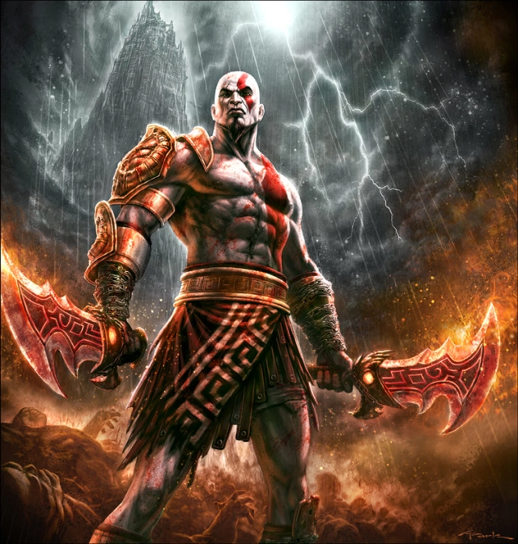
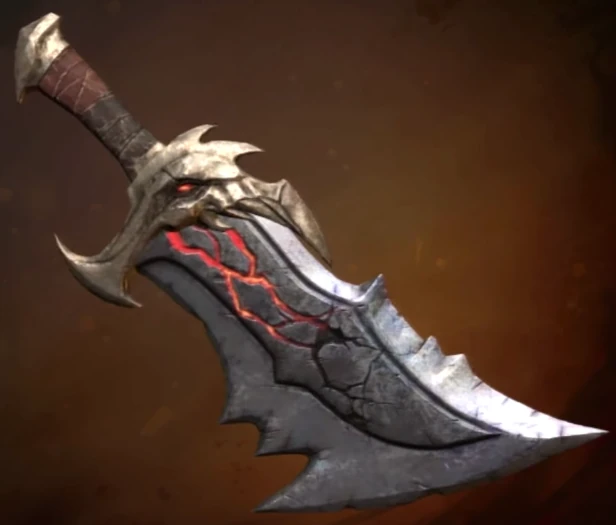

God Of War (PS2)
Story
Kratos is a Spartan warrior with superhuman godly-powers and abilities (due to the fact that he is the demigod son of Zeus the King of the Gods, which was never revealed in the first game until in the sequel) who serves the Gods of Olympus in Greece. Numerous flashbacks revealed that he was once a successful warrior but eventually became a bloodthirsty captain in the Spartan Army as he frequently led his men into several victories before being defeated by a Barbarian King, Alrik, Kratos' arch-enemy. Facing death, but refuse to surrender his defeat, Kratos called on the God of War, Ares, whom he promised to serve if the God would spare his men and provide the power to destroy their enemies. Ares agreed and bonded the Blades of Chaos, a pair of chained blades forged in the depths of Tartarus, to his new servant. Kratos, equipped with the blades, then decapitated the Alrik while Ares destroys Alrik's men, leading Kratos to regain his victory once more.
Kratos waged war at the behest of Ares, eventually leading an attack on a village occupied by worshipers of Athena, the Goddess of Wisdom. Unbeknownst to Kratos, Ares had secretly transported Kratos' wife and daughter to the village; during his frenzied attack on its temple, Kratos accidentally killed them in a blind fury. Although Ares believed this act would free Kratos to become the perfect warrior, the horrified and saddened Spartan instead renounced his pledge of servitude to the God and swore vengeance against him. An elderly Oracle of the destroyed village cursed Kratos by bonding the ashes of his dead family to his skin, turning it ash-white and earning him the nickname, "Ghost of Sparta". Plagued by nightmares of his horrible deed, Kratos vowed to serve the other Gods in hope of ridding himself of the visions.
Gameplay
The gameplay of God of War focuses on combo-based combat, achieved through the player's main weapon—the Blades of Chaos and a secondary weapon acquired later in the game. It features quick time events that require the player to complete various game controller actions in a timed sequence to defeat stronger enemies and bosses. The player can use up to four magical attacks and a power-enhancing ability as alternative combat options. It also features puzzles and platforming elements.
Characters
Kratos - The titular character and the main protagonist, a Spartan warrior and demigod with an incredible set of superhuman godly powers due to his blood divine heritage of a God, who swears revenge against Ares for betraying him and for making him turn his Baldes of Chaos on his wife and daughter. After exacting revenge against Ares at the end of the game, Kratos succeeded him by becoming the new God of War (which the first game explains that Kratos is the titular character of the series, not Ares).
Athena - The Goddess of War and Wisdom, she is the most prominent Goddess who helps Kratos on his quest.
Ares - The God of War who caused Kratos to murder his own family, and is now the target of his revenge. He is killed by Kratos at the end of the game. He is the main antagonist.
Village Oracle - An elderly woman who resides in the Village of Athena. However, Kratos and his men burned everything to the ground. She bears a glowing Omega necklace, hinting that she works for/is Ares, and warned Kratos of going into the temple, as his wife and child were inside. She attached their ashes to his skin after their death.
Items & Abilities
Over the course of the game, he obtains a variety of godly weapons and artifacts that enable him to use his demigod powers. Kratos' main weapon is the Blades of Chaos: a pair of blades attached to chains wrapped around the character's wrists and forearms. In gameplay, the blades can be swung in various maneuvers. However later in the game, he collects many more weapons and abilities.
Weapons
Blades of Chaos - Powerful blades Given to Kratos by Ares, the God of War after pledging his allegiance to him. They're a pair of large curved blades that are attached to Kratos' arms via chains. He can swing them about to strike enemies.
Blade of Artemis - This is a large, curved, cumbersome blade given to Kratos by the Goddess Artemis. It is quite slow but also does more damage to enemies than the Blades of Chaos.
Blade of the Gods - Kratos used this powerful blade to kill Ares.
Magic
Poseidon's Rage - This is a magic given to Kratos by Poseidon. It allows him to unleash radiating lighting upon multiple foes. It also does more damage.
Medusa's Gaze - Upon killing Medusa for Aphrodite, Kratos takes her head and can use it to turn his enemies to stone.
Zeus' Fury - A power given to Kratos by Zeus. It allows Kratos to summon bolts to throw them at distant enemies.